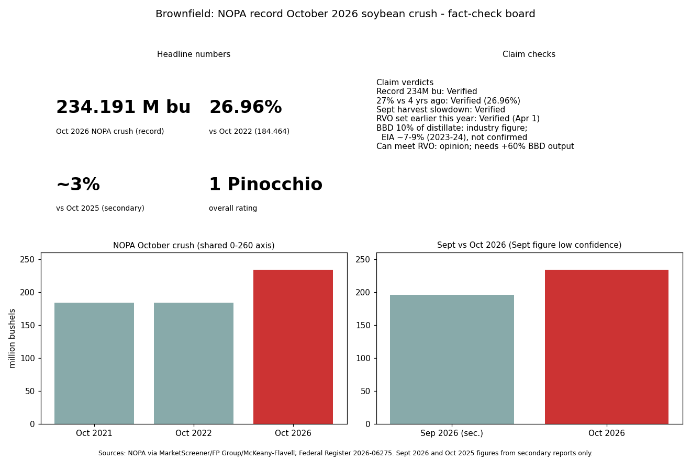

The Brownfield piece (Nov 25, 2026) is substantially accurate. NOPA members crushed 234.191 million bushels in October 2026, a record; the "27% above four years ago" holds (234.191 vs 184.464 million in Oct 2022 = +26.96%). Rating: 1 Pinocchio.
| Claim | Verdict | Confidence |
|---|---|---|
| October crush 234M bu, all-time record | Verified (234.191M) | High: multiple outlets |
| 27% above four years ago | Verified (26.96%) | High |
| September slowed by slow western Corn Belt harvest | Consistent with reports | Medium |
| EPA set expanded RVOs earlier this year | Verified: final rule Apr 1, 2026, BBD 9.07/9.20B RINs | High |
| Meets RVOs; value, feed, energy security | Opinion | n/a |
| BBD 10% of distillate pool | Partially supported (industry figure) | Low |